O Ábaco
O primeiro instrumento de calcular da humanidade, e o único desta série que você vai aprender a operar de verdade, aqui na tela. Quando o áudio pedir, aperte Próximo. Nas práticas, pause e brinque.
Como ele funciona. Cada haste é uma casa: unidade embaixo, depois dezena, centena e milhar, cada uma valendo dez vezes a de baixo. Empurrar conta soma, puxar tira. Quando a haste chega em 9 e vem mais um, ela esvazia e nasce uma conta na casa de cima. Esse é o vai-um.
As práticas e demonstrações daqui usam este modelo, o mais simples: uma conta vale uma unidade. O chinês e o japonês que aparecem nas fotos têm uma barra, e a conta de cima vale cinco. Lê mais rápido, custa uma regra a mais.
Um risco por bicho
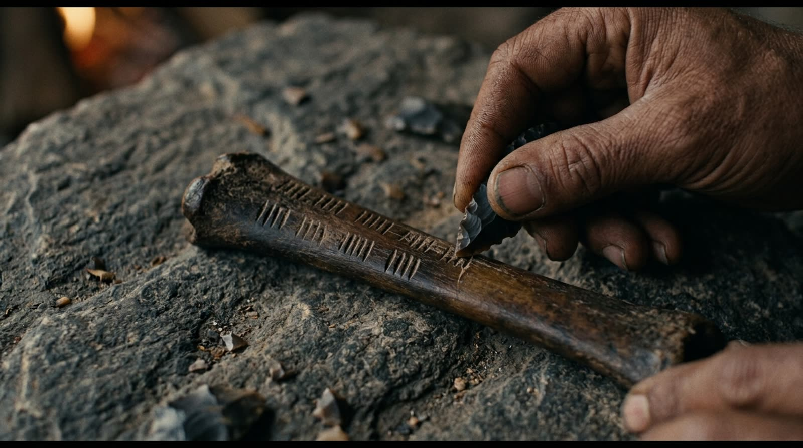
Uma ovelha, uma pedra
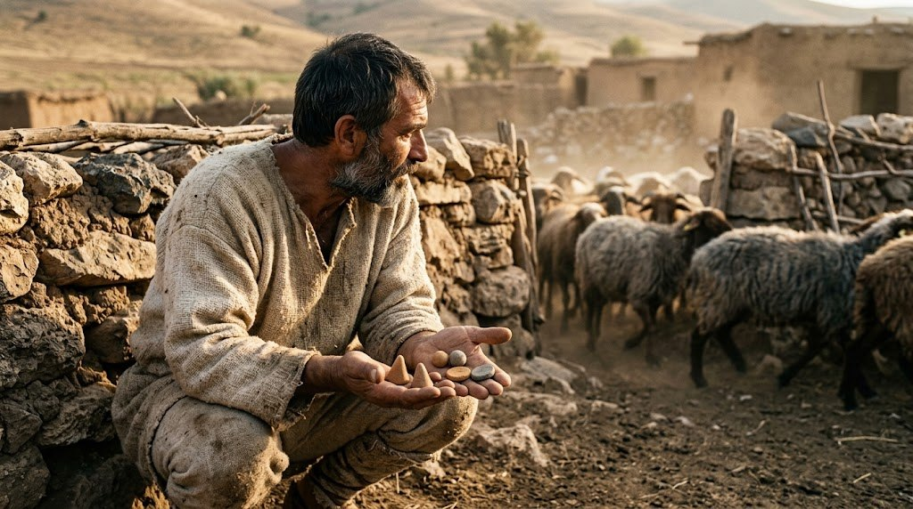
Lacrada dentro da argila
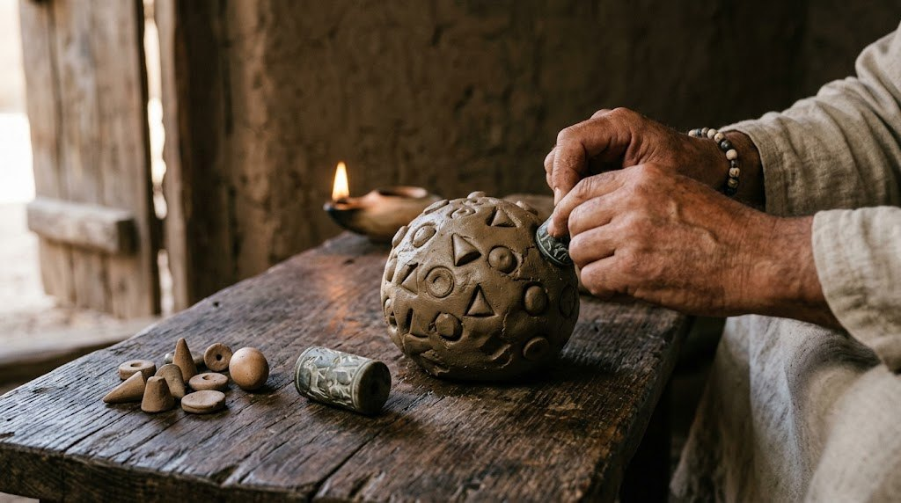
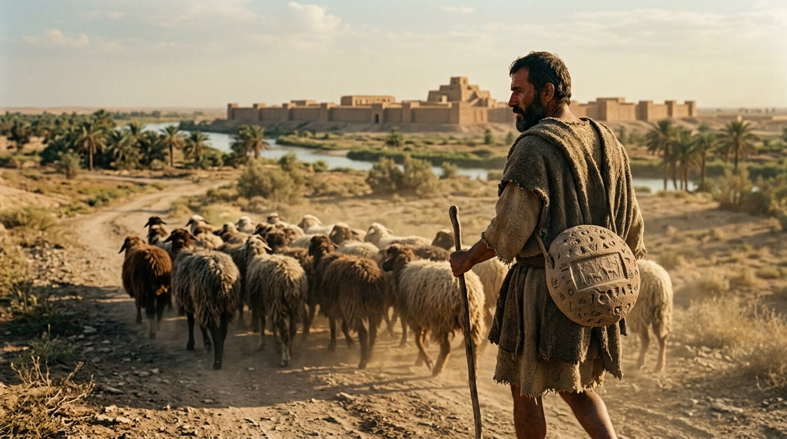
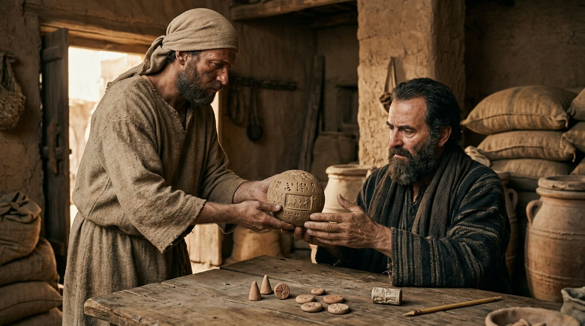
A marca vence a ficha
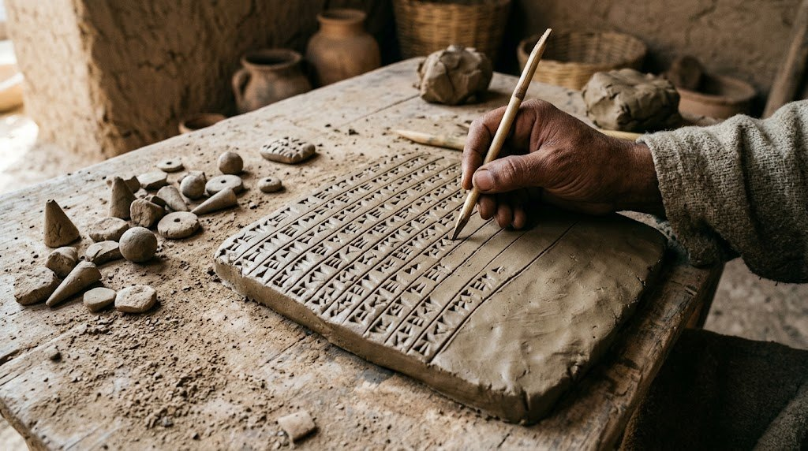
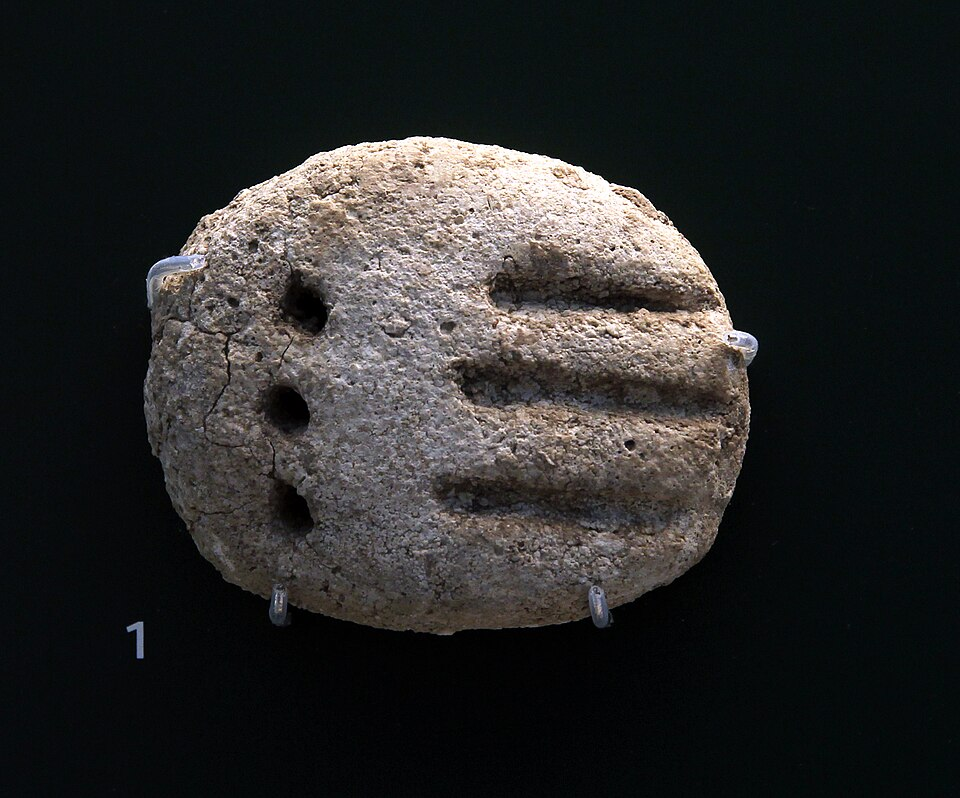
A pedra ganha lugar
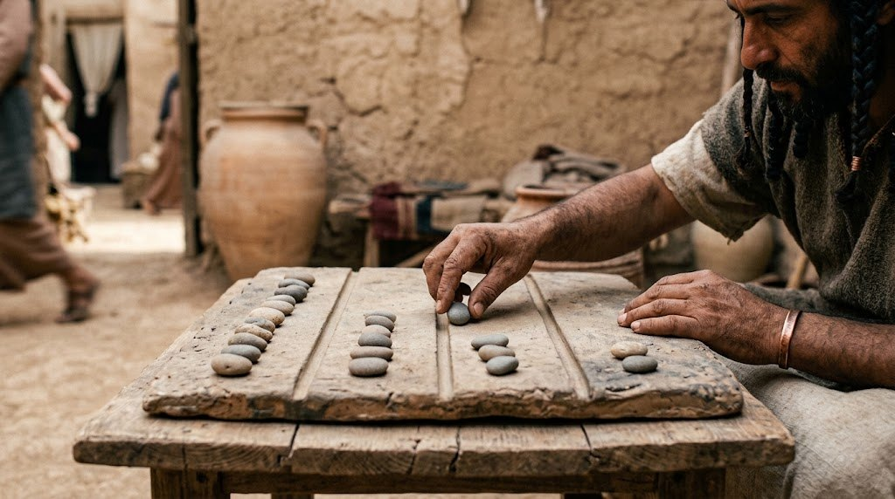
E as pirâmides do Egito?
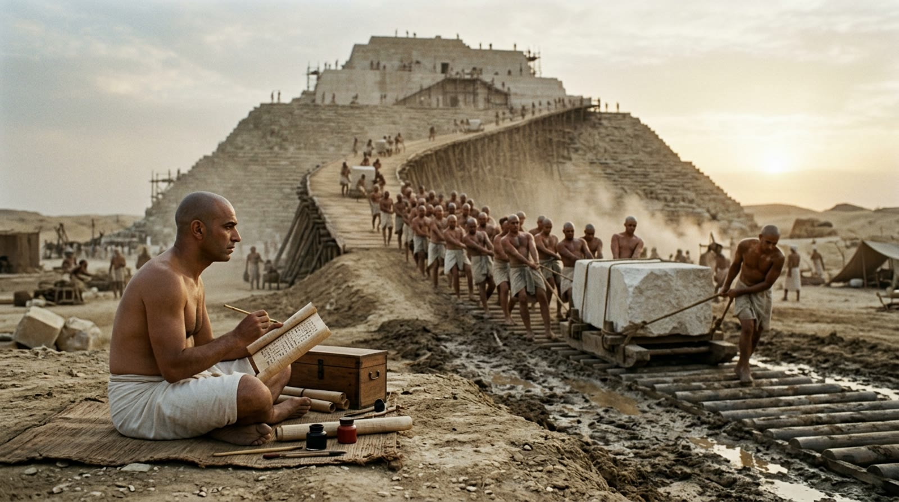
O risco foi, o ábaco não
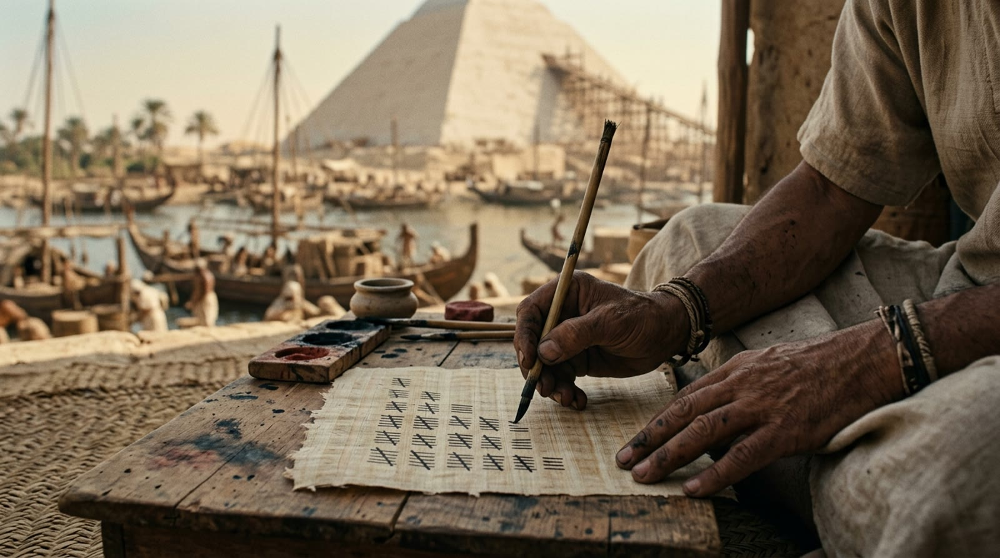
Nome, data e motivação
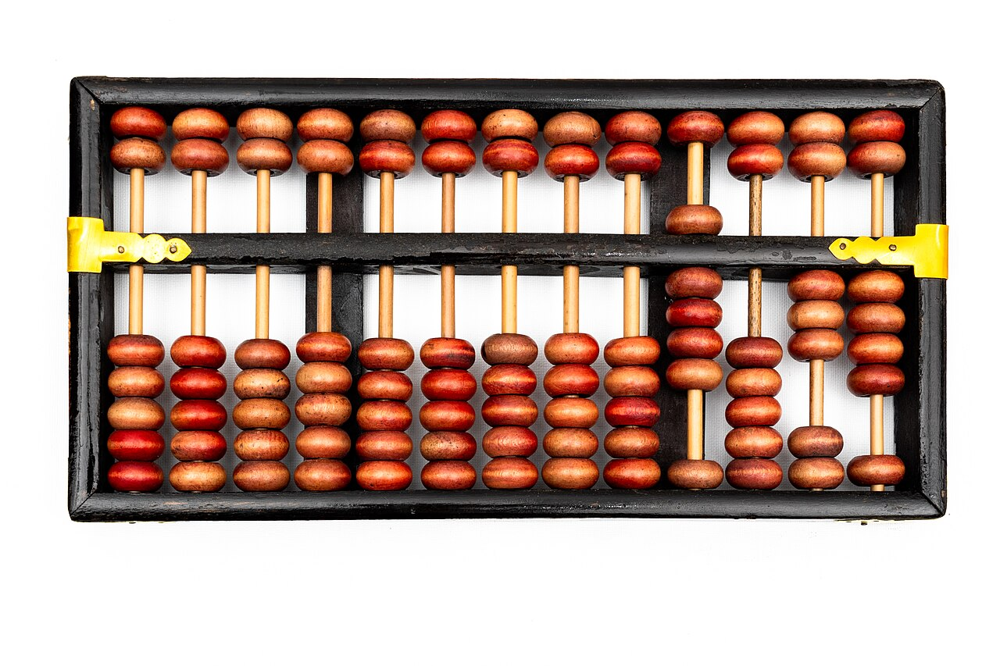
Como se lê o suanpan
Cada haste vale 10× a de baixo
O vai-um: o fio enche e sobe 1
Represente os números
2 × 24, passo a passo
3 × 24, e o vai-um aparece
Sua vez: faça o 3 × 24
Ainda vivo, quase 5.000 anos depois
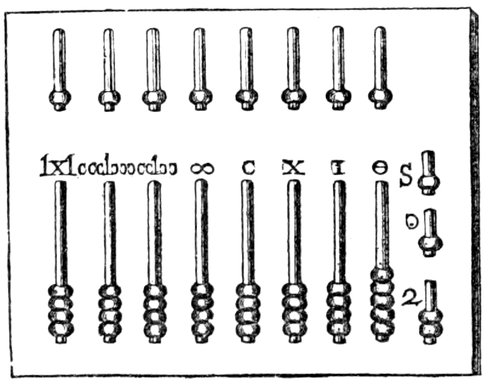
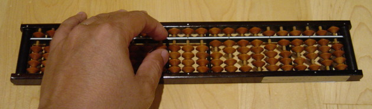
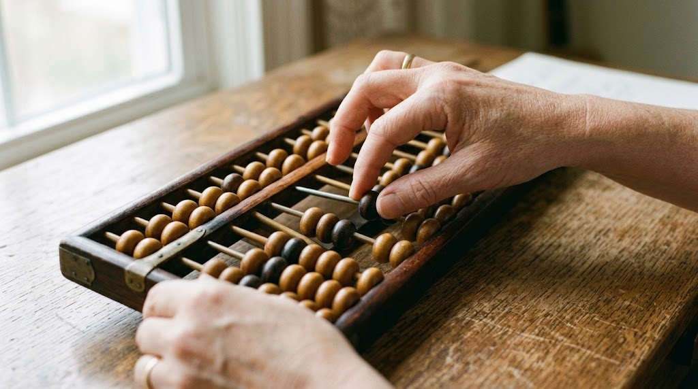